Tomas Petricek, Charles University, Prague
1 INTRO - HyperCard demo - 2 TECH DIMS - Timeline 4 COMPLEMENTARY - C64 3 FORMAL - TheGamma 5 HCI - Denicek 6 CONCLUSIONS
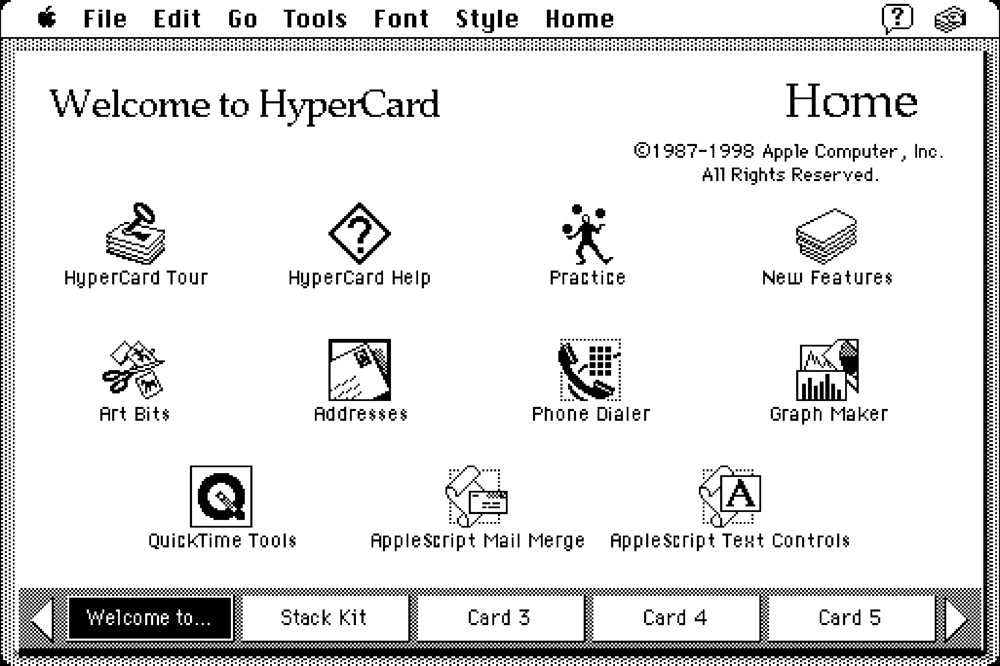
Hypermedia system
Help humankind
share knowledge
Allowed lots of people to create small apps
What does a PL researcher see?
What can a programming languages researcher say about HyperCard?
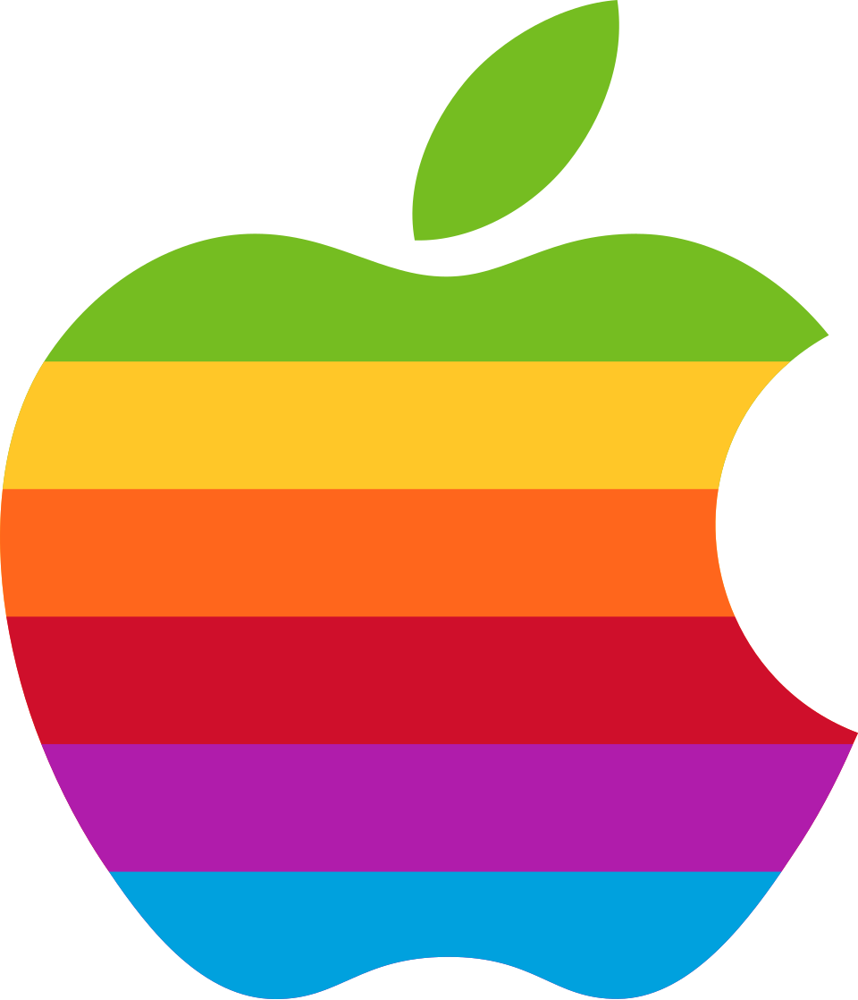
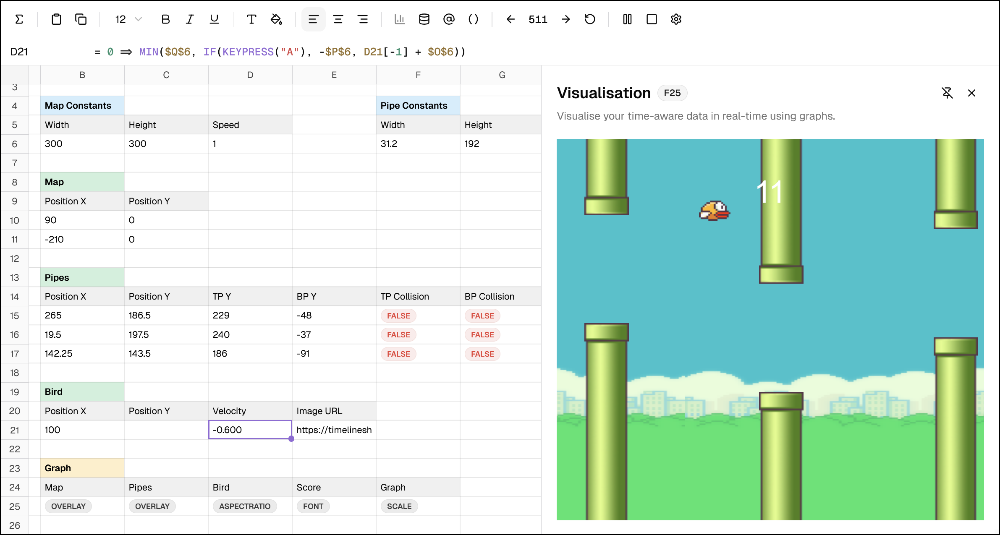
Adding time to spreadsheets
Most widely used programming sys!
Keep simplicity & add expressivity
Comparison with using Python?
Go to: https://timelinesheets.com
Or try: https://tinyurl.com/ecoop26-bird
Create simple time-aware calculations
A1 = 0 => A1[-1] + 1
B1 = 0 => B1[-1] + RAND(1) - 0.5
How does spreadsheet system
(with time) compare to Python?
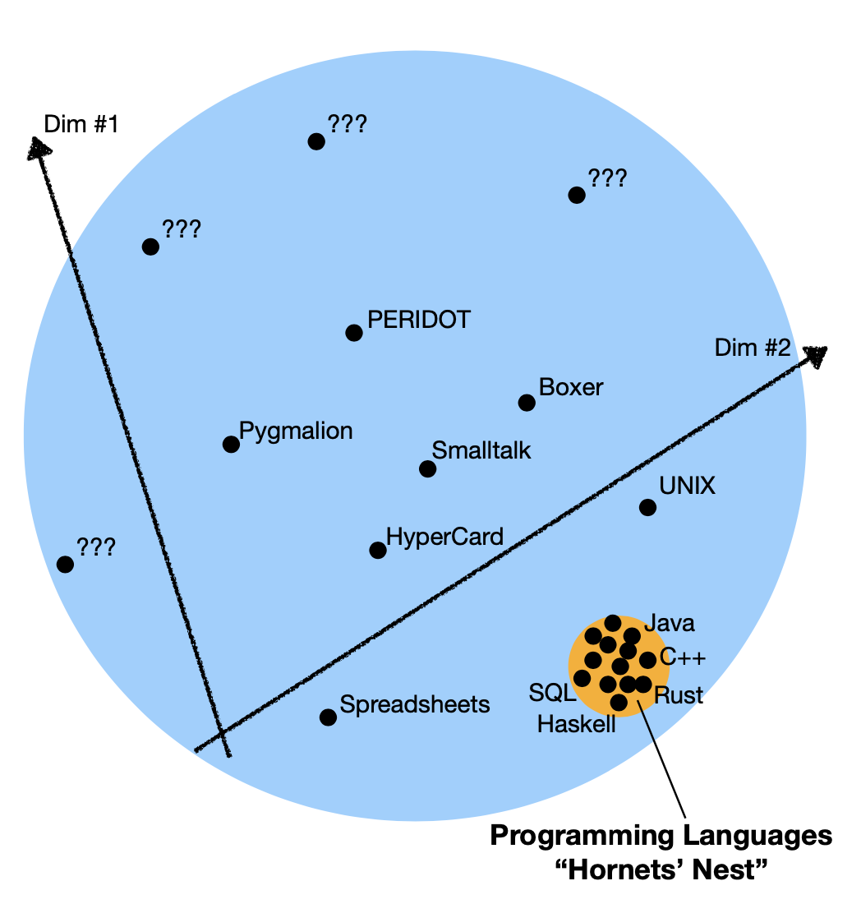
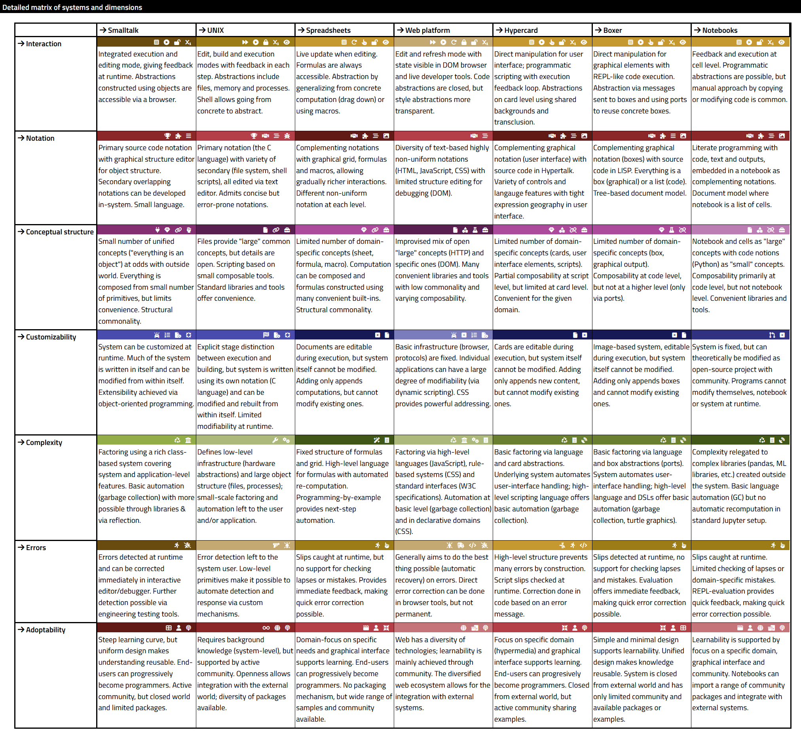
Analysed systems
LISP machines, UNIX, Web, Hypercard, Spreadsheets, Haskell, Boxer, DarkLang, etc.
Programming happens in the
same interface mode as using
Graphics and basic interactions constructed graphically; script is secondary
Clear separation between app itself and
user code; cannot be modified from within
Programming happens in the
same interface mode as using
Code reuse by creating formula and using "drag down"
Timeline has composable charting primitives
but no built-in high-level charts
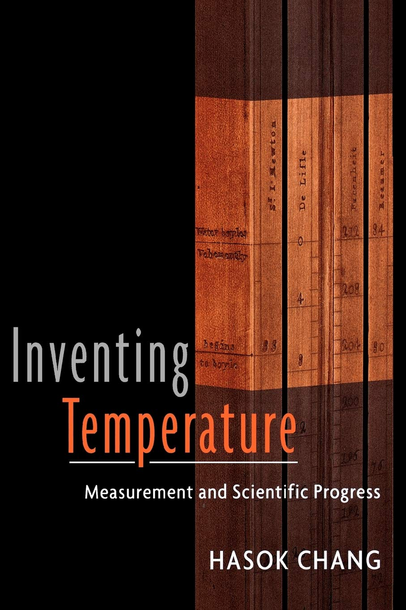
Scientific ideas get lost due to paradigm shifts
There is often something valuable lost too.
Do serious historical research to recover them!
Even more the case
in programming!
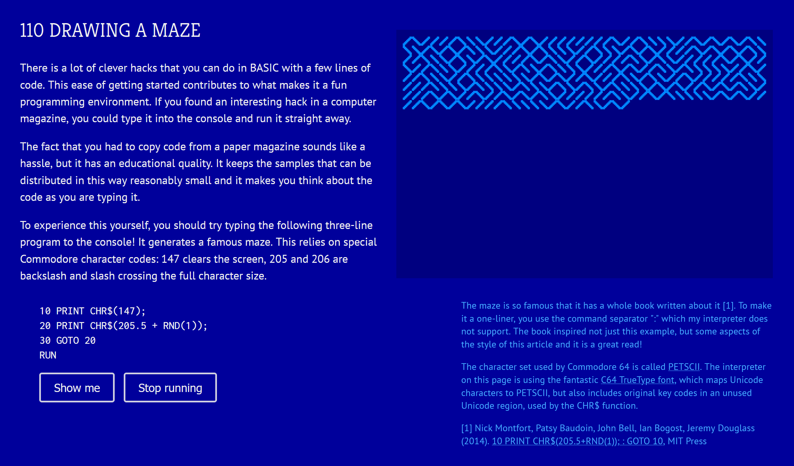
"It is impossible to teach good programming to students that have had a prior exposure to BASIC" (Dijkstra)
What can we learn from BASIC?
https://tomasp.net/commodore64
Try printing Hello world!
PRINT "HELLO WORLD"
Try writing an infinite loop!
10 PRINT "HELLO WORLD"
20 GOTO 10
Is there anything good about prefixing each
line with a number? What is the point?
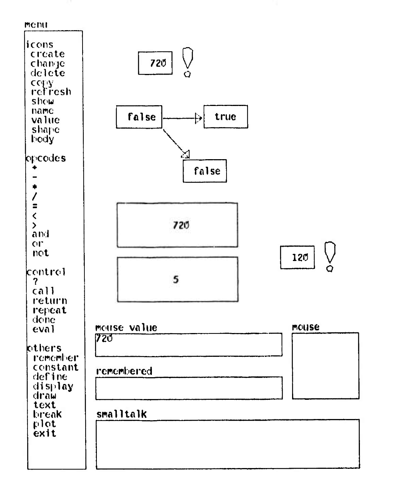
Visual programming system based on demonstration
Largest Smalltalk 74 program ever written
What does using Pygmalion feel like?
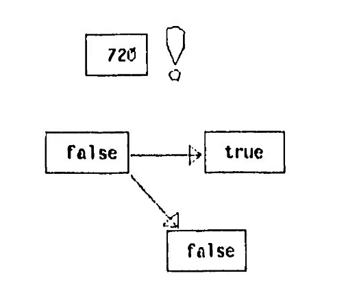
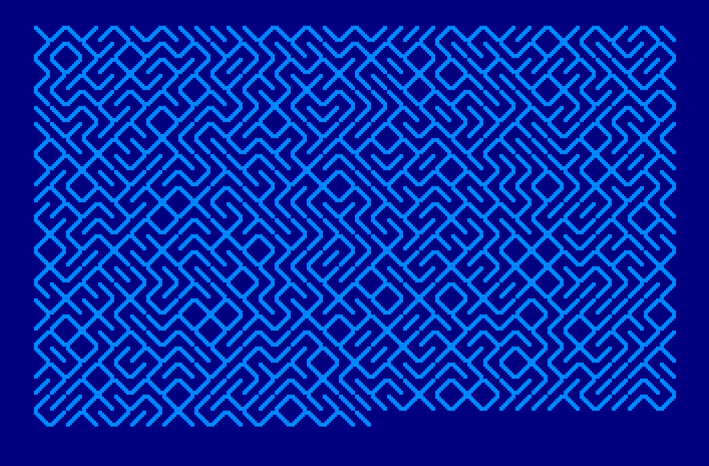
Terminal works as both REPL
and structure code editor
Simple but experts can use POKE and SYS
Simple unstructured language
Demos distributed as source in magazines
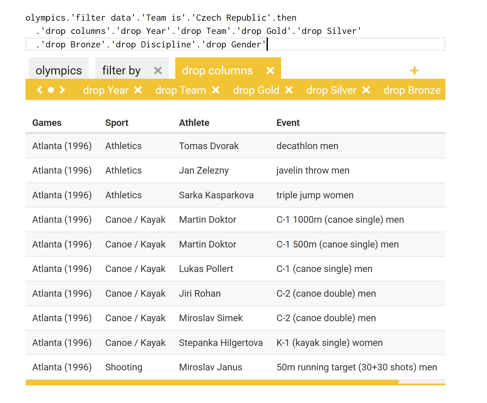
Programming for non-programmers
Explore data by repeatedly choosing from a list of offered options
What is the underlying language?
https://thegamma.net or directly
https://tinyurl.com/ecoop26-olympics
Known issues in Firefox (sorry)
Old and buggy data (also sorry)
Type olympics. and choose an operation. Get top medalists or top teams?
What is the model of The Gamma language
or system? Is there a formal grammar?
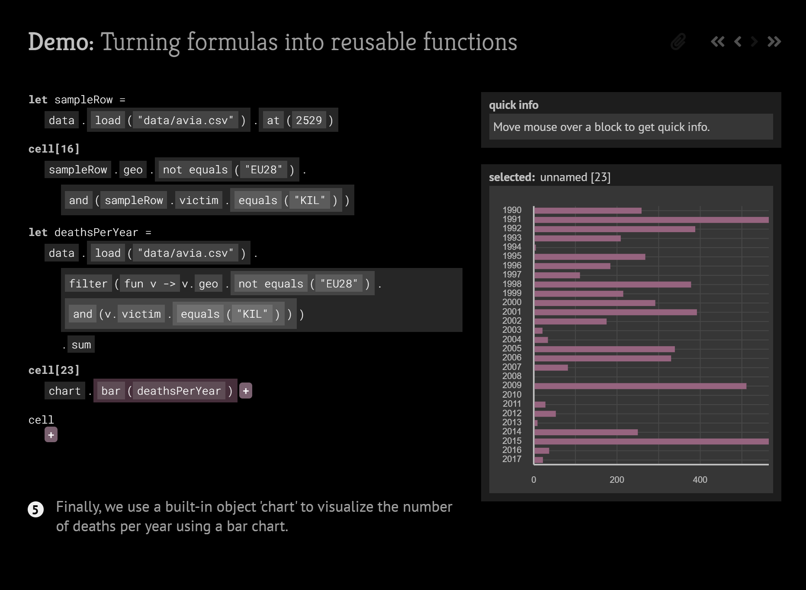
Programs as lists of interactions
Keep track of the process!
Running code, refactoring
Program is a sequence of let bindings or invocations
Lambda only used as method parameter!
\[\newcommand{\lsep}{\;\;|\;\;} \newcommand{\kvd}[1]{\textbf{#1}} \newcommand{\narrow}[1]{\hspace{-0.6em}#1\hspace{-0.6em}} \begin{array}{lcl} p &\narrow{::=}& c_1; \ldots; c_n\\ c &\narrow{::=}& \kvd{let}~x = t \lsep t\\ \end{array} \quad \begin{array}{lccl} t &\narrow{::=}& o &\hspace{-1em}\lsep x \lsep t.m(e, \ldots, e) \\ e &\narrow{::=}& t &\hspace{-1em}\lsep \lambda x\rightarrow e\\ \end{array}\]
Reflects how data science scripting works!
We can get a preview for any sub-expression
Record operations as performed by the user!
\[\newcommand{\narrow}[1]{\hspace{-0.6em}#1\hspace{-0.6em}} \begin{array}{rcl} p &\narrow{::=}& i_1, ~\ldots,~ i_k\\ r &\narrow{::=}& \textbf{named}~n~~|~~\textbf{indexed}~i\\ i &\narrow{::=}& \textbf{def}~\textit{value}\\ &\narrow{|}& \mathbf{name}~\textit{ref}~\textbf{a}~\textit{name}\\ &\narrow{|}& \textbf{dot}~\textit{name}~\textbf{on}~\textit{ref}\\ &\narrow{|}& \textbf{apply}~\textbf{args}~\textit{ref}_1, \ldots, \textit{ref}_n~\textbf{to}~\textit{ref}\\ &\narrow{|}& \mathbf{evaluate}~\textit{ref}\\ &\narrow{|}& \mathbf{abstract}~\textbf{from}~\textit{ref}_1, \ldots, \textit{ref}_k~\textbf{to}~\textit{ref} \end{array}\]
We can talk about interesting things!
Render program as code or spreadsheet
Refine type information after \(\textbf{evaluate}\) interaction
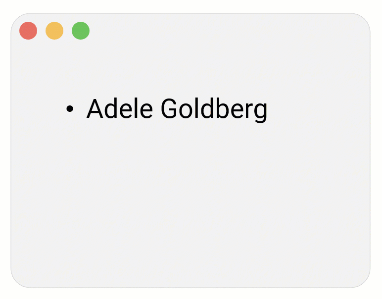
Merge edits made independently by different users
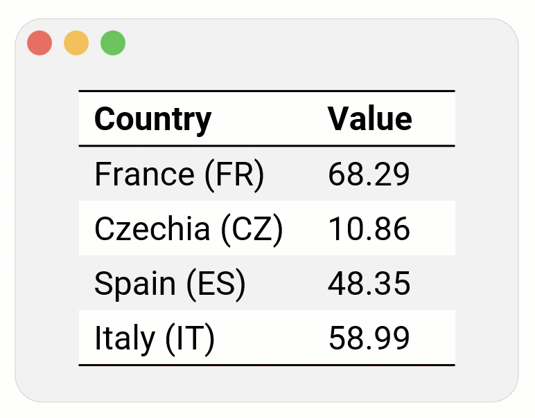
Specify program by showing concrete document action
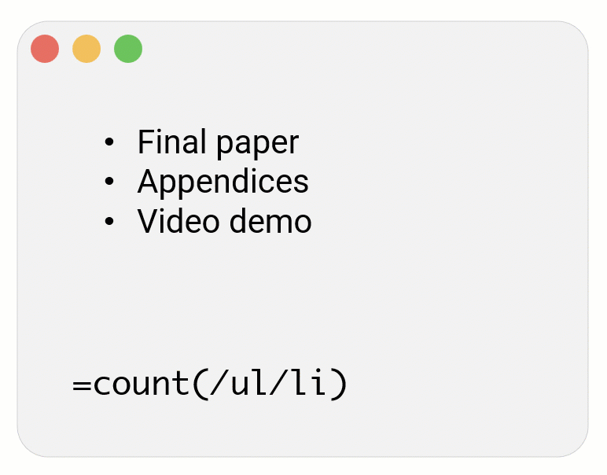
Adapt references when document structure changes
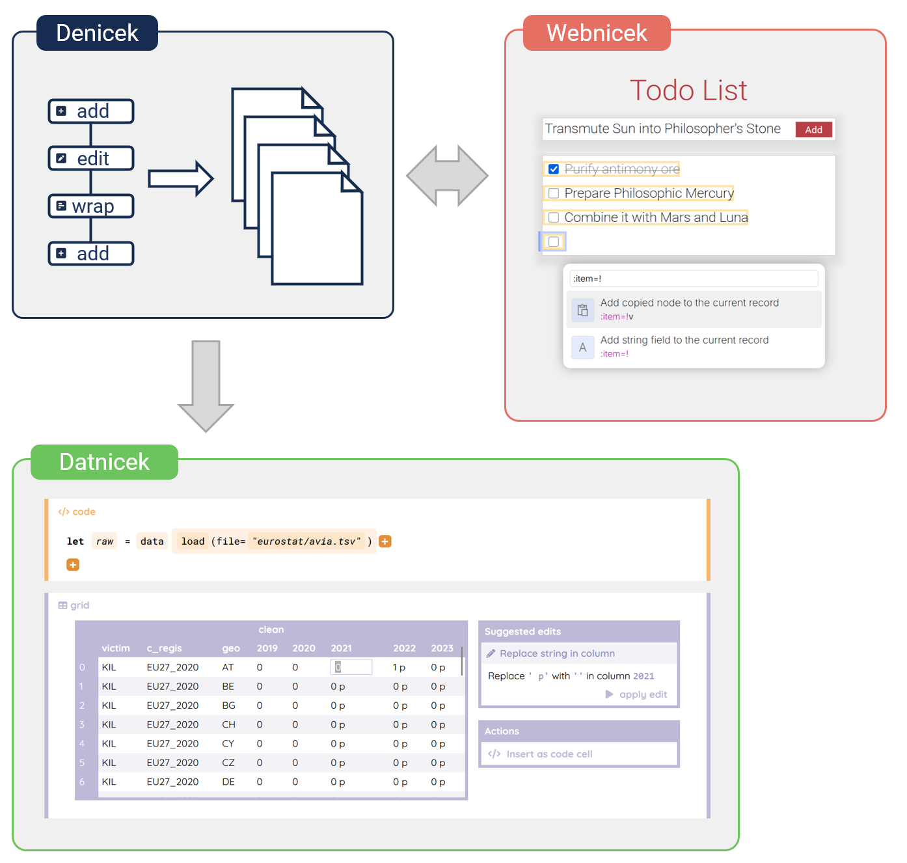
Computational substrate for end-user document-oriented programming
Makes implementing
such systems easy!
https://tinyurl.com/ecoop26-denicek
Replay the steps of Chapter 1 demo
Invoke @normalize! in step 4 yourself
Compare an interactive essay with a classic paper!
Did you break it? Did you learn something extra?
Systems view opens new research questions
We can use many different research methods
AI agents interact with programming systems too
Tomas Petricek, Charles University, Prague